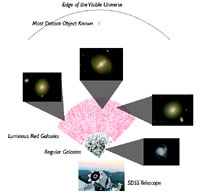

May 15, 2006
|
+ enlarge  |
|
The SDSS telescope at Apache Point, NM has been used to create a map of
regular galaxies (black points) and luminous red galaxies (red points)
out to 40% of the distance to the edge of the visible universe. Light
from the most distant red galaxies has taken 5.6 billion years to reach
us, while the edge of the visible universe is 13.7 billion light years
away. This map of the universe allowed astronomers to detect galactic
structures more than a billion light years across. (Credit - Hogg, SDSS-II collaboration) |
Since the 1970s, astronomers have discovered structures in the three-dimensional distribution of galaxies on ever larger scales, up to hundreds of millions of light years. Today, researchers from the Sloan Digital Sky Survey (SDSS-II) announced the first measurements of galactic structures more than a billion light years across.
The three-dimensional map was built by observing more than 600,000 galaxies in SDSS-II data covering over one-tenth of the sky. "The volume probed here is the same as a cube 5.3 billion light years on a side," said principal author Nikhil Padmanabhan of Princeton University. "It reaches one-third of the way to the edge of the observable Universe, and we measure structures that extend over a significant fraction of that distance."
"Structure on these scales were previously measured only in the cosmic microwave background radiation," the cooled glow of the Big Bang that bathes the Earth from all directions, added co-author Uros Seljak, also of Princeton. By comparing the new measurements to the microwave background data, astronomers can test whether these enormous cosmic structures have grown at the expected rate — between the time the cosmic microwaves were emitted and the time that the light of the new structures was emitted," said Padmanabhan.
"These measurements give much better determinations of the amount of dark matter in the Universe, and they also probe the nature of dark energy, the mysterious substance accelerating the expansion of the Universe."
"With the new measurements, our emerging picture of a Universe dominated by dark matter and dark energy had a chance to fall on its face. Instead, it passed a new test with flying colors," Seljak stated.
One especially exciting feature of the new measurements is the detection of galactic structure imprinted by cosmic sound waves in the early Universe. These sound waves have a length scale of 450 million light years, and they were first detected in early 2005 by independent teams from the SDSS-II and the Two Degree Field Galaxy Redshift Survey (2dFGRS).
The new study is the first to detect these sound waves at large distances from Earth that probe earlier cosmic epochs.
"Astronomers are falling over themselves to measure the precise length of these sound waves," said co-author David Schlegel of Lawrence Berkeley National Laboratory. "Measuring this 'standard ruler' at different epochs is one of the best tools we have for studying dark energy, the component of modern cosmology we understand least."
The new study uses a novel and efficient technique for mapping structure over a very large volume. Traditionally, astronomers determine distances to galaxies by measuring the changes in their colors caused by the expansion of the Universe. These changes are subtle, so this method usually requires a time-consuming, individual analysis for each galaxy. Researchers typically have to spread its light into a spectrum to reveal sharp features that can be precisely measured.
The SDSS-II team instead focused on a special class of galaxies, luminous red galaxies, whose true colors are very regular and well understood. As their name suggests, these are some of the brightest and reddest galaxies in the Universe. These highly accurate color measurements in the SDSS-II data are sufficient on their own to yield approximate distances for these galaxies. And they are precise enough for large scale clustering studies.
The new measurements are the first to show that this technique can reveal structure on the largest scales, with enough detail to detect sound waves and probe dark energy.
The relation between color and distance was calibrated using spectral measurements for a small subset of the sample, obtained by an international collaboration of astronomers from the SDSS-II and the Australian-UK Two Degree Field (2dF) team.
This hybrid technique allows us to use all of our data to maximal effect," said co-author Daniel Eisenstein of the University of Arizona. "We leveraged precise observations of 10,000 galaxies to gain fuzzy distances to nearly a million galaxies. The loss in accuracy is more than made up for by the sheer numbers we can now use."
The findings are presented in "The Clustering of Luminous Red Galaxies in the Sloan Digital Sky Survey Imaging Data," a paper submitted to the Monthly Notices of the Royal Astronomical Society, and available on the astrophysics preprint server, arxiv.org/astro-ph/0605302 on Monday, May 15th.
A simultaneous and independent analysis by a team of astronomers from Canada and the UK, led by University of British Columbia researcher Chris Blake, reached similar conclusions, analyzing a similar but not identical data set. Their research paper was also released today on the astrophysics preprint server.